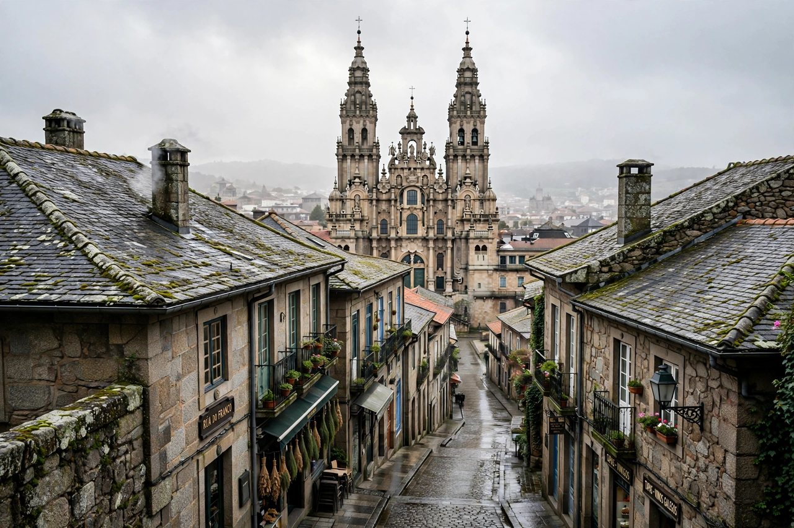

| Santiago de Compostela | |
|---|---|
 The old town and cathedral | |
| Country | Spain |
| Autonomous community | Galicia |
| Province | A Coruña |
| Population | About 100,000 |
| Seat of | Government of Galicia (Xunta) |
Santiago de Compostela is the capital of the autonomous community of Galicia in north-western Spain. The city grew up around the shrine of the apostle Saint James the Great in its cathedral and has been one of Christendom's great pilgrimage destinations since the early Middle Ages.
The city's name combines Santiago (Saint James) with Compostela, traditionally derived from the Latin campus stellae, "field of the star", recalling the legend that a star guided Bishop Theodemir to the apostle's tomb around 813. Kings of Asturias and León endowed the shrine, and by the 11th and 12th centuries pilgrims from all over Europe were streaming along the Camino de Santiago. The city became an archbishopric and a wealthy ecclesiastical centre, and its university was founded in 1495. In 1985 the old town was inscribed as a UNESCO World Heritage Site.
The Camino remains the city's defining activity: pilgrims arriving on foot or by bicycle receive the Compostela certificate at the Pilgrim's Office, and the cathedral's daily pilgrim mass welcomes walkers from the French Way and other routes. Hundreds of thousands complete the journey each year.
Santiago is the seat of the Galician government and of one of Spain's oldest universities. Its monumental old town of granite squares — the Obradoiro, Quintana, Platerías and Cervantes — is balanced by contemporary architecture such as the City of Culture of Galicia complex on Mount Gaiás. Galician language and culture are prominent in civic life.